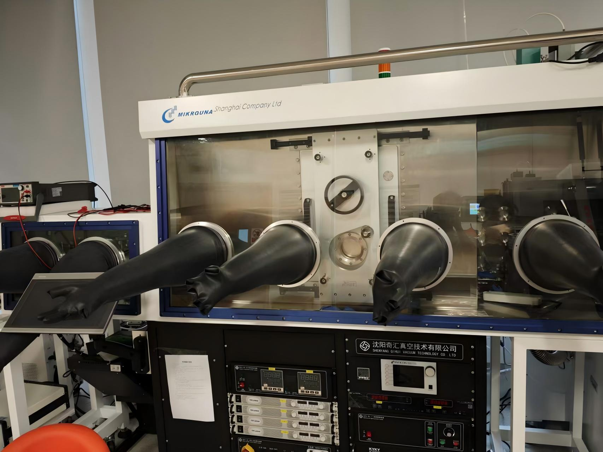
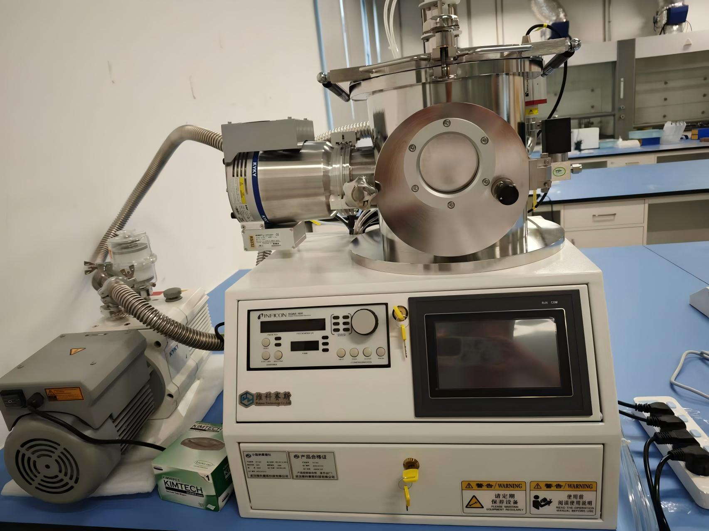
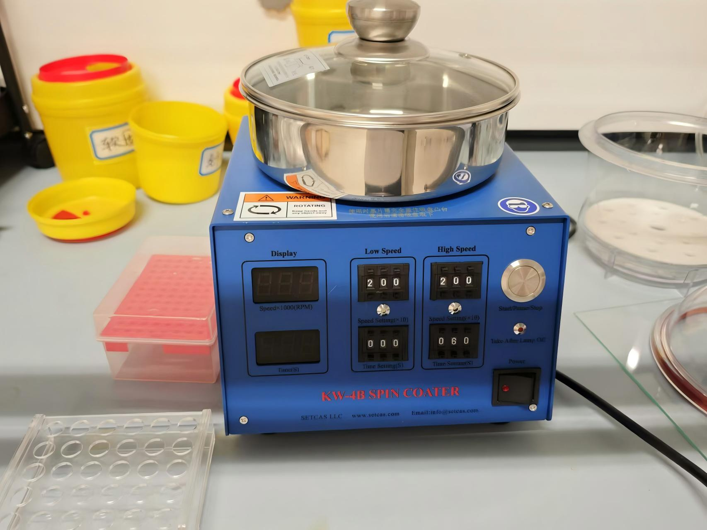
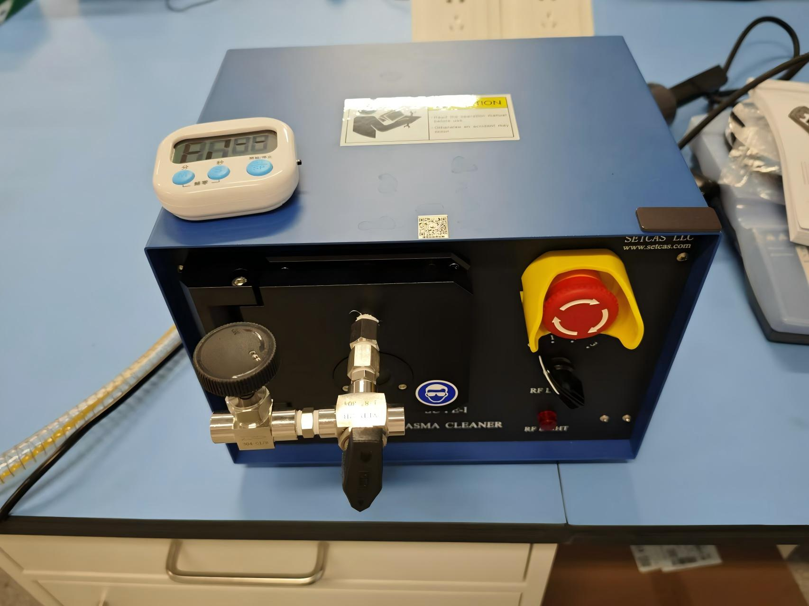
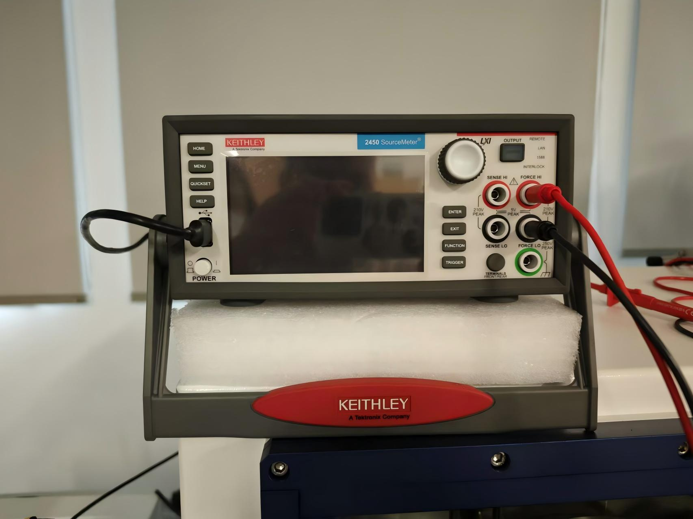
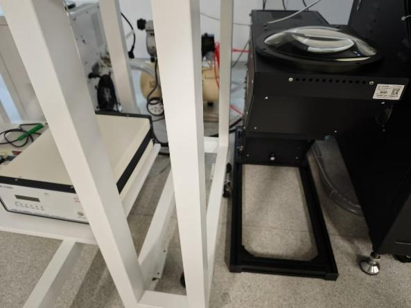
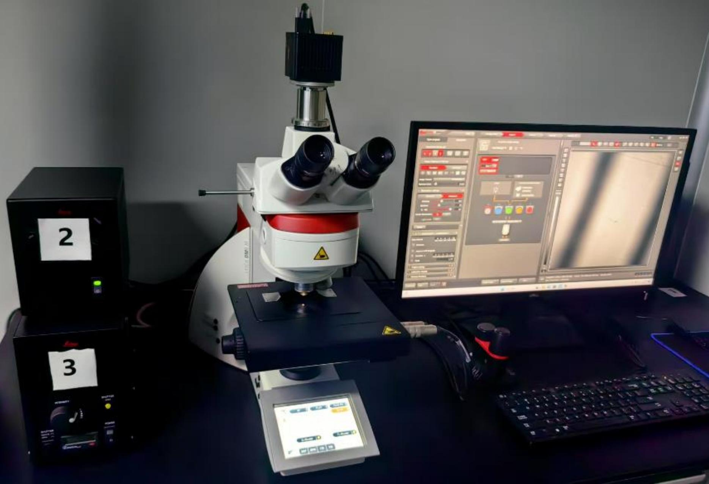
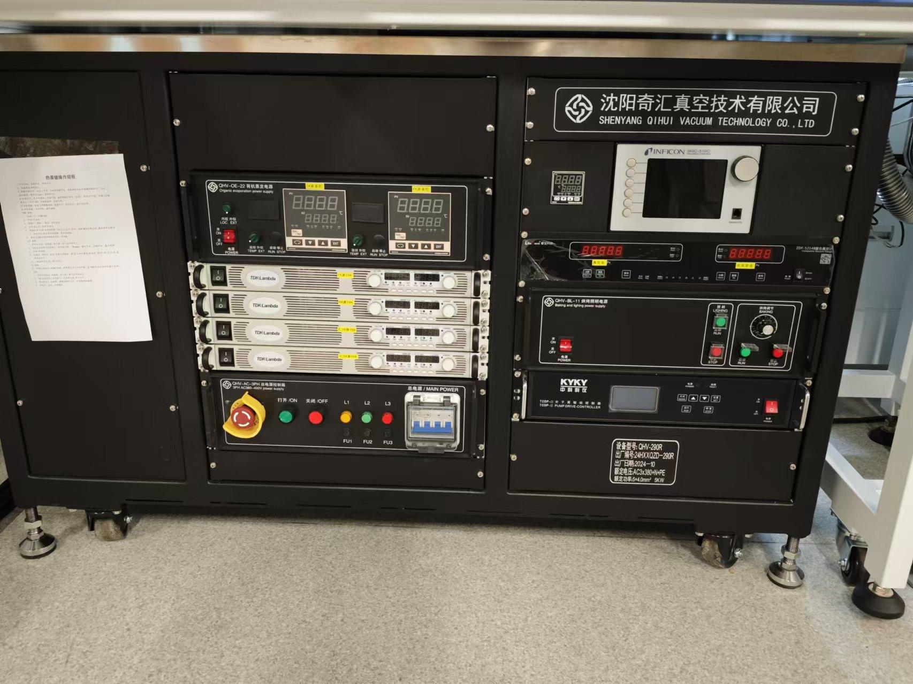

Flexible Electronics & Intelligent Sensing
School of Flexible Electronics, Sun Yat-sen University (Shenzhen Campus)
Integrating flexible electronics, plasmonics, and intelligent systems for next-generation wearable and embodied technologies.
Stretchable, transparent electrodes and sensors using AgNWs and advanced nanomaterials for next-generation wearables.
Multimodal sensors for real-time detection of physiological signals, sweat biomarkers, and vital signs.
Flexible electronic skin and tactile sensors enabling robots to perceive and interact with the physical world.
Flexible neural interfaces, self-powered neuromorphic devices, and intelligent neural signal processing systems.
Energy harvesting (TENG) and radiative cooling technologies for sustainable, battery-free wearable electronics.
Advanced radiative cooling and thermal regulation solutions for high-performance flexible and wearable systems.
Positions available
Qiu Xu
PhD Candidate
Jiahao Guan
Graduate Student
Zeguang Li
Undergraduate Researcher
Jiayuan Zhou
Undergraduate Researcher
Linsu Yue
Undergraduate Researcher
Selected from 34+ peer-reviewed papers • Total citations > 2800 • h-index: 18
Full list • Citation metrics • h-index updates

Inert atmosphere for device fabrication

Metal and organic thin film deposition

Solution-processed thin film coating

Surface cleaning and activation

High-precision electrical characterization

AM1.5G solar light simulation

Morphology and structure characterization

High-quality organic and metal thin films
* A partial display of laboratory equipment
We are actively recruiting highly motivated PhD students, postdocs, and undergraduate researchers.
Send Your CV →Xiaopeng Bai, Ph.D.
Associate Professor & PhD Supervisor
School of Flexible Electronics, Sun Yat-sen University (Shenzhen)
baixp5@mail.sysu.edu.cn